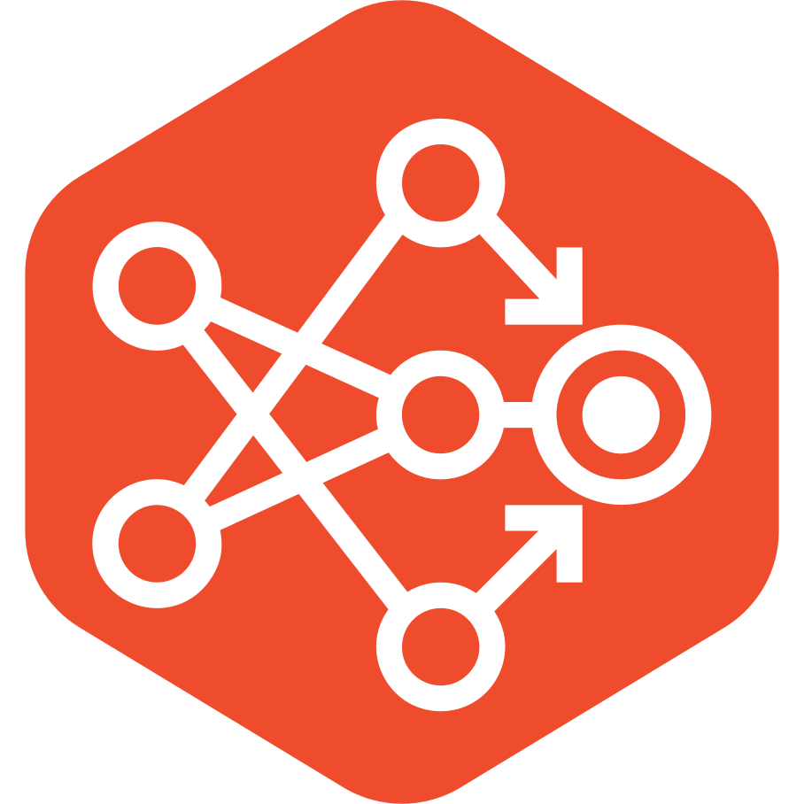
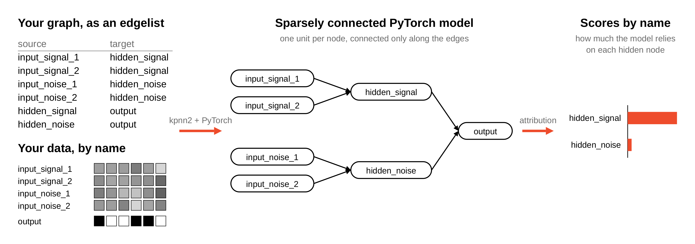

kpnn2



![PyPI](https://img.shields.io/pypi/v/kpnn2?labelColor=555&logo=data%3Aimage%2Fsvg%2Bxml%3Bbase64%2CPHN2ZyBjbGlwLXJ1bGU9ImV2ZW5vZGQiIGZpbGwtcnVsZT0iZXZlbm9kZCIgaGVpZ2h0PSIzNjguNTY4IiBzdHJva2UtbGluZWNhcD0ic3F1YXJlIiBzdHJva2UtbGluZWpvaW49InJvdW5kIiBzdHJva2UtbWl0ZXJsaW1pdD0iMS41IiB2aWV3Qm94PSIxMzguOTk4IDExMi4wNzkgMzE3LjMxMCAzNjguNTY4IiB3aWR0aD0iMzE3LjMxMCIgeG1sbnM9Imh0dHA6Ly93d3cudzMub3JnLzIwMDAvc3ZnIj48ZyB0cmFuc2Zvcm09InRyYW5zbGF0ZSg3Mi41OSAtNjMuMjA5KSI%2BPHBhdGggZD0ibTY3My40MSAyMzYuMDE2LTY0LjI3MSA4LjI1MnYyODEuMzU3aDY0LjI3NnoiIGZpbGw9IiNmZmNhMWUiIHN0cm9rZT0iI2Q3YzViMiIgc3Ryb2tlLXdpZHRoPSIxLjExIiB0cmFuc2Zvcm09Im1hdHJpeCgxLjAyMzY1IC0uMzcyNzUgLjIyMTE1IC4wODA5MyAtNDIzLjA4NiA0NTcuNDQ4KSIvPjxwYXRoIGQ9Im02MDkuMTM5IDI0NC4yNjhoNjQuMjc2djI4MS4zNTdoLTY0LjI3NnoiIGZpbGw9IiNmZmQyNDEiIHN0cm9rZT0iI2Q3YzViMiIgc3Ryb2tlLXdpZHRoPSIuMzUiIHRyYW5zZm9ybT0ibWF0cml4KDMuOTMzNTkgLTEuNDM4MzcgMCAuNTMwODQgLTIyNjYuNDMgMTA4Ny45NCkiLz48cGF0aCBkPSJtNjA5LjEzOSAyNDQuMjY4aDY0LjI3NnYyODEuMzU3aC02NC4yNzZ6IiBmaWxsPSIjMmY2NDkwIiBzdHJva2U9IiNkMWUzZjIiIHN0cm9rZS13aWR0aD0iLjYyIiB0cmFuc2Zvcm09Im1hdHJpeCgxLjk2MDQgLS43MTY4NSAuMjIxNiAuMDc5MjcgLTExMTguNTUgNjM5LjMzOSkiLz48cGF0aCBkPSJtNjA5LjEzOSAyNDQuMjY4aDY0LjI3NnYyODEuMzU3aC02NC4yNzZ6IiBmaWxsPSIjMzc3NWE4IiBzdHJva2U9IiNkMWUzZjIiIHN0cm9rZS13aWR0aD0iMS4xNSIgdHJhbnNmb3JtPSJtYXRyaXgoMS4wMjI4MSAtLjM3NCAwIDEuMDU2OTUgLTQzMC43NzMgMjE0LjE3OCkiLz48cGF0aCBkPSJtNjA5LjEzOSAyNDQuMjY4aDY0LjI3NnYyODEuMzU3aC02NC4yNzZ6IiBmaWxsPSIjMmY2NDkwIiBzdHJva2U9IiNmZmYiIHN0cm9rZS13aWR0aD0iMS4xNyIgdHJhbnNmb3JtPSJtYXRyaXgoLS45NzQ5OSAtLjM0OTI0IDAgMS4wNTY5NSA3ODYuMTk0IDE5OS4yMDgpIi8%2BPHBhdGggZD0ibTYwOS4xMzkgMjQ0LjI2OGg2NC4yNzZ2MjgxLjM1N2gtNjQuMjc2eiIgZmlsbD0iI2VmZWVlYSIgc3Ryb2tlPSIjZDhkOGQ4IiBzdHJva2Utd2lkdGg9IjEuNDQiIHRyYW5zZm9ybT0ibWF0cml4KC0uOTc0OTkgLS4zNTY1MiAwIC4yNjg4NSA3ODYuMTk0IDYxOC4zNTUpIi8%2BPGcgc3Ryb2tlPSIjZDFlM2YyIj48cGF0aCBkPSJtNjA5LjEzOSAyNDQuMjY4aDY0LjI3NnYyODEuMzU3aC02NC4yNzZ6IiBmaWxsPSIjMmY2NDkwIiBzdHJva2Utd2lkdGg9IjEuNDQiIHRyYW5zZm9ybT0ibWF0cml4KC0uOTY4MzQgLS4zNTQwOSAwIC41MzA3NyA3MTkuNDgzIDQyNy41KSIvPjxwYXRoIGQ9Im02MDkuMTM5IDI0NC4yNjhoNjQuMjc2djI4MS4zNTdoLTY0LjI3NnoiIGZpbGw9IiMzNzc1YTgiIHN0cm9rZS13aWR0aD0iMS4yIiB0cmFuc2Zvcm09Im1hdHJpeCguOTM1NTQgLS4zNDIxIDAgMS4wNTY5NSAtMzExLjg5MiAxNzAuNDkyKSIvPjxwYXRoIGQ9Im02MDkuMTM5IDI0NC4yNjhoNjQuMjc2djI4MS4zNTdoLTY0LjI3NnoiIGZpbGw9IiMzNzc1YTgiIHN0cm9rZS13aWR0aD0iMS40MyIgdHJhbnNmb3JtPSJtYXRyaXgoLjk3NDIgLS4zNTYyMyAwIC41MzA4NCAtNDYzLjc0NCA0MjguNzYxKSIvPjxwYXRoIGQ9Im02Ny41NzUgMzkzLjE2MSA2Mi4xMjEgMjIuNDY1IDE4OC43MDgtNjguMjk5bS0xMjUuMTY1LTI5LjE0MSAxMjQuNzMyLTQ1LjYwMiIgZmlsbD0ibm9uZSIvPjwvZz48cGF0aCBkPSJtMzE4LjQwNCAzNDcuMzI3IDYzLjkzOS0yMy4yMDkiIGZpbGw9Im5vbmUiIHN0cm9rZT0iI2Q3YzViMiIvPjxwYXRoIGQ9Im02MDkuMTM5IDI0NC4yNjhoNjQuMjc2djI4MS4zNTdoLTY0LjI3NnoiIGZpbGw9IiMyZjY0OTAiIHN0cm9rZT0iI2QxZTNmMiIgc3Ryb2tlLXdpZHRoPSIxLjE2IiB0cmFuc2Zvcm09Im1hdHJpeCguOTY3ODggLS4zNTI0NCAuMjIxMTUgLjA4MDkzIC01NzYuMTY4IDUxMy41ODMpIi8%2BPGNpcmNsZSBjeD0iNjM3LjUxNyIgY3k9IjI2MC4wMDEiIGZpbGw9IiNmZmYiIHI9IjE1LjcxIiB0cmFuc2Zvcm09Im1hdHJpeCguNzgyNiAtLjQwMjQgLjA1NDk0IC44NjE0IC0yOTUuMzYzIDMwNC45MzQpIi8%2BPHBhdGggZD0ibTE5NS43ODYgMTk4LjEyNSA2MS42OTYgMjIuMTI2IiBmaWxsPSJub25lIiBzdHJva2U9IiNkMWUzZjIiLz48cGF0aCBkPSJtNjczLjQxNSAyNDQuMjY4aC02NC4yNzZsLjAxOCAyODIuNDA1IDY0LjI1OC0xLjA0OHoiIGZpbGw9IiNmZmQyNDEiIHN0cm9rZT0iI2Q3YzViMiIgc3Ryb2tlLXdpZHRoPSIxLjM3IiB0cmFuc2Zvcm09Im1hdHJpeCgxLjAyMjgxIC0uMzc0IDAgLjUyODQzIC00MzAuNzczIDQ5MS45ODMpIi8%2BPHBhdGggZD0ibTY3My40MTUgMjQ0LjI2OGgtNjQuMjc2bC4wMDEgMjgxLjc1OCA2NC4yNzUtLjQwMXoiIGZpbGw9IiNmZmQyNDEiIHN0cm9rZT0iI2Q3YzViMiIgc3Ryb2tlLXdpZHRoPSIxLjQ4IiB0cmFuc2Zvcm09Im1hdHJpeCguOTM1NTQgLS4zNDIxIDAgLjUyNzQzIC0zMTEuODkyIDQ0OC44MjIpIi8%2BPGNpcmNsZSBjeD0iNjM3LjUxNyIgY3k9IjI2MC4wMDEiIGZpbGw9IiNmZWZkZmQiIHI9IjE1LjcxIiB0cmFuc2Zvcm09Im1hdHJpeCguNzcwNzQgLS4zOTYzIC4wNTE1NiAuODA4MzIgLTIwNS45MTYgNTA5LjQxMSkiLz48cGF0aCBkPSJtMTkyLjQxMiA0NjguMDU5IDEyNi4wMjgtNDUuOTc3IiBmaWxsPSJub25lIiBzdHJva2U9IiNkN2M1YjIiLz48L2c%2BPC9zdmc%2B)

![PyPI - Downloads](https://img.shields.io/pypi/dm/kpnn2?labelColor=555&logo=data%3Aimage%2Fsvg%2Bxml%3Bbase64%2CPHN2ZyBjbGlwLXJ1bGU9ImV2ZW5vZGQiIGZpbGwtcnVsZT0iZXZlbm9kZCIgaGVpZ2h0PSIzNjguNTY4IiBzdHJva2UtbGluZWNhcD0ic3F1YXJlIiBzdHJva2UtbGluZWpvaW49InJvdW5kIiBzdHJva2UtbWl0ZXJsaW1pdD0iMS41IiB2aWV3Qm94PSIxMzguOTk4IDExMi4wNzkgMzE3LjMxMCAzNjguNTY4IiB3aWR0aD0iMzE3LjMxMCIgeG1sbnM9Imh0dHA6Ly93d3cudzMub3JnLzIwMDAvc3ZnIj48ZyB0cmFuc2Zvcm09InRyYW5zbGF0ZSg3Mi41OSAtNjMuMjA5KSI%2BPHBhdGggZD0ibTY3My40MSAyMzYuMDE2LTY0LjI3MSA4LjI1MnYyODEuMzU3aDY0LjI3NnoiIGZpbGw9IiNmZmNhMWUiIHN0cm9rZT0iI2Q3YzViMiIgc3Ryb2tlLXdpZHRoPSIxLjExIiB0cmFuc2Zvcm09Im1hdHJpeCgxLjAyMzY1IC0uMzcyNzUgLjIyMTE1IC4wODA5MyAtNDIzLjA4NiA0NTcuNDQ4KSIvPjxwYXRoIGQ9Im02MDkuMTM5IDI0NC4yNjhoNjQuMjc2djI4MS4zNTdoLTY0LjI3NnoiIGZpbGw9IiNmZmQyNDEiIHN0cm9rZT0iI2Q3YzViMiIgc3Ryb2tlLXdpZHRoPSIuMzUiIHRyYW5zZm9ybT0ibWF0cml4KDMuOTMzNTkgLTEuNDM4MzcgMCAuNTMwODQgLTIyNjYuNDMgMTA4Ny45NCkiLz48cGF0aCBkPSJtNjA5LjEzOSAyNDQuMjY4aDY0LjI3NnYyODEuMzU3aC02NC4yNzZ6IiBmaWxsPSIjMmY2NDkwIiBzdHJva2U9IiNkMWUzZjIiIHN0cm9rZS13aWR0aD0iLjYyIiB0cmFuc2Zvcm09Im1hdHJpeCgxLjk2MDQgLS43MTY4NSAuMjIxNiAuMDc5MjcgLTExMTguNTUgNjM5LjMzOSkiLz48cGF0aCBkPSJtNjA5LjEzOSAyNDQuMjY4aDY0LjI3NnYyODEuMzU3aC02NC4yNzZ6IiBmaWxsPSIjMzc3NWE4IiBzdHJva2U9IiNkMWUzZjIiIHN0cm9rZS13aWR0aD0iMS4xNSIgdHJhbnNmb3JtPSJtYXRyaXgoMS4wMjI4MSAtLjM3NCAwIDEuMDU2OTUgLTQzMC43NzMgMjE0LjE3OCkiLz48cGF0aCBkPSJtNjA5LjEzOSAyNDQuMjY4aDY0LjI3NnYyODEuMzU3aC02NC4yNzZ6IiBmaWxsPSIjMmY2NDkwIiBzdHJva2U9IiNmZmYiIHN0cm9rZS13aWR0aD0iMS4xNyIgdHJhbnNmb3JtPSJtYXRyaXgoLS45NzQ5OSAtLjM0OTI0IDAgMS4wNTY5NSA3ODYuMTk0IDE5OS4yMDgpIi8%2BPHBhdGggZD0ibTYwOS4xMzkgMjQ0LjI2OGg2NC4yNzZ2MjgxLjM1N2gtNjQuMjc2eiIgZmlsbD0iI2VmZWVlYSIgc3Ryb2tlPSIjZDhkOGQ4IiBzdHJva2Utd2lkdGg9IjEuNDQiIHRyYW5zZm9ybT0ibWF0cml4KC0uOTc0OTkgLS4zNTY1MiAwIC4yNjg4NSA3ODYuMTk0IDYxOC4zNTUpIi8%2BPGcgc3Ryb2tlPSIjZDFlM2YyIj48cGF0aCBkPSJtNjA5LjEzOSAyNDQuMjY4aDY0LjI3NnYyODEuMzU3aC02NC4yNzZ6IiBmaWxsPSIjMmY2NDkwIiBzdHJva2Utd2lkdGg9IjEuNDQiIHRyYW5zZm9ybT0ibWF0cml4KC0uOTY4MzQgLS4zNTQwOSAwIC41MzA3NyA3MTkuNDgzIDQyNy41KSIvPjxwYXRoIGQ9Im02MDkuMTM5IDI0NC4yNjhoNjQuMjc2djI4MS4zNTdoLTY0LjI3NnoiIGZpbGw9IiMzNzc1YTgiIHN0cm9rZS13aWR0aD0iMS4yIiB0cmFuc2Zvcm09Im1hdHJpeCguOTM1NTQgLS4zNDIxIDAgMS4wNTY5NSAtMzExLjg5MiAxNzAuNDkyKSIvPjxwYXRoIGQ9Im02MDkuMTM5IDI0NC4yNjhoNjQuMjc2djI4MS4zNTdoLTY0LjI3NnoiIGZpbGw9IiMzNzc1YTgiIHN0cm9rZS13aWR0aD0iMS40MyIgdHJhbnNmb3JtPSJtYXRyaXgoLjk3NDIgLS4zNTYyMyAwIC41MzA4NCAtNDYzLjc0NCA0MjguNzYxKSIvPjxwYXRoIGQ9Im02Ny41NzUgMzkzLjE2MSA2Mi4xMjEgMjIuNDY1IDE4OC43MDgtNjguMjk5bS0xMjUuMTY1LTI5LjE0MSAxMjQuNzMyLTQ1LjYwMiIgZmlsbD0ibm9uZSIvPjwvZz48cGF0aCBkPSJtMzE4LjQwNCAzNDcuMzI3IDYzLjkzOS0yMy4yMDkiIGZpbGw9Im5vbmUiIHN0cm9rZT0iI2Q3YzViMiIvPjxwYXRoIGQ9Im02MDkuMTM5IDI0NC4yNjhoNjQuMjc2djI4MS4zNTdoLTY0LjI3NnoiIGZpbGw9IiMyZjY0OTAiIHN0cm9rZT0iI2QxZTNmMiIgc3Ryb2tlLXdpZHRoPSIxLjE2IiB0cmFuc2Zvcm09Im1hdHJpeCguOTY3ODggLS4zNTI0NCAuMjIxMTUgLjA4MDkzIC01NzYuMTY4IDUxMy41ODMpIi8%2BPGNpcmNsZSBjeD0iNjM3LjUxNyIgY3k9IjI2MC4wMDEiIGZpbGw9IiNmZmYiIHI9IjE1LjcxIiB0cmFuc2Zvcm09Im1hdHJpeCguNzgyNiAtLjQwMjQgLjA1NDk0IC44NjE0IC0yOTUuMzYzIDMwNC45MzQpIi8%2BPHBhdGggZD0ibTE5NS43ODYgMTk4LjEyNSA2MS42OTYgMjIuMTI2IiBmaWxsPSJub25lIiBzdHJva2U9IiNkMWUzZjIiLz48cGF0aCBkPSJtNjczLjQxNSAyNDQuMjY4aC02NC4yNzZsLjAxOCAyODIuNDA1IDY0LjI1OC0xLjA0OHoiIGZpbGw9IiNmZmQyNDEiIHN0cm9rZT0iI2Q3YzViMiIgc3Ryb2tlLXdpZHRoPSIxLjM3IiB0cmFuc2Zvcm09Im1hdHJpeCgxLjAyMjgxIC0uMzc0IDAgLjUyODQzIC00MzAuNzczIDQ5MS45ODMpIi8%2BPHBhdGggZD0ibTY3My40MTUgMjQ0LjI2OGgtNjQuMjc2bC4wMDEgMjgxLjc1OCA2NC4yNzUtLjQwMXoiIGZpbGw9IiNmZmQyNDEiIHN0cm9rZT0iI2Q3YzViMiIgc3Ryb2tlLXdpZHRoPSIxLjQ4IiB0cmFuc2Zvcm09Im1hdHJpeCguOTM1NTQgLS4zNDIxIDAgLjUyNzQzIC0zMTEuODkyIDQ0OC44MjIpIi8%2BPGNpcmNsZSBjeD0iNjM3LjUxNyIgY3k9IjI2MC4wMDEiIGZpbGw9IiNmZWZkZmQiIHI9IjE1LjcxIiB0cmFuc2Zvcm09Im1hdHJpeCguNzcwNzQgLS4zOTYzIC4wNTE1NiAuODA4MzIgLTIwNS45MTYgNTA5LjQxMSkiLz48cGF0aCBkPSJtMTkyLjQxMiA0NjguMDU5IDEyNi4wMjgtNDUuOTc3IiBmaWxsPSJub25lIiBzdHJva2U9IiNkN2M1YjIiLz48L2c%2BPC9zdmc%2B)
Turn a named edgelist into sparsely connected PyTorch layers you assemble yourself.
kpnn2 builds sparsely connected PyTorch networks from a graph of
named nodes, as Figure 1 shows. Each node of the graph becomes a
unit of the network, and each edge becomes a connection, including
edges that skip layers. Pairs of nodes without an edge stay
unconnected.

Figure 1. You provide a graph and data with named features.
kpnn2 turns the graph into sparsely connected PyTorch layers, you
train them, and kpnn2 labels the attribution scores by node name.
The core of kpnn2 is keeping node and edge names attached to the
right tensor positions. Inside PyTorch, a node is only a position
in a tensor, and nothing checks that the position still belongs to
the same name after the graph changes, the feature columns are
reordered, or a checkpoint is reloaded. When names and positions
drift apart, training still runs and the loss looks normal, but
scores are reported under the wrong names. kpnn2 ties every node
to its units and every edge to its weight, from the edgelist to the
attribution scores, and raises an error when they no longer match:
when the graph is parsed, when input columns are aligned, when a
checkpoint is loaded, and when scores are labeled.
Networks whose nodes are known entities and whose edges are known relationships between them are called knowledge-primed neural networks (KPNNs). Biology has many, with genes, transcription factors, kinases, and pathways as nodes, for example Fortelny and Bock (2020). The idea is not specific to biology: any domain whose entities have names and known relationships, such as chemistry, works the same way. Figure 1 and the quick start use a small graph with generic names, in which four inputs feed two hidden nodes that feed one output. When each sample is its own graph, use a graph neural network instead; see Why not a GNN?.
Installation¶
Requires Python 3.10 or later.
pip install kpnn2
Quick start¶
This example builds the model in Figure 1. The labels depend only
on input_signal_1 and input_signal_2, so a model that learned
the task should rely on hidden_signal and not on hidden_noise.
The last step uses Captum (pip install captum), which kpnn2
does not depend on.
1. Write the graph as an edgelist¶
An
edgelist
has one row per edge, from source to target. parse_layered()
sorts the nodes into layers.
import pandas as pd
import torch
from torch import nn
import kpnn2
torch.manual_seed(42)
edgelist = pd.DataFrame(
[
("input_signal_1", "hidden_signal"),
("input_signal_2", "hidden_signal"),
("input_noise_1", "hidden_noise"),
("input_noise_2", "hidden_noise"),
("hidden_signal", "output"),
("hidden_noise", "output"),
],
columns=["source", "target"],
)
spec = kpnn2.parse_layered(edgelist)
for layer in spec.layer_nodes:
print(layer)
('input_noise_1', 'input_noise_2', 'input_signal_1', 'input_signal_2')
('hidden_noise', 'hidden_signal')
('output',)
2. Build the model in PyTorch¶
Each hop
— the edges entering one layer — becomes one PackedLinear, which
stores one weight per edge; PackedLinear.from_hop() builds it
from the hop. Without
skip edges,
each hop reads only the layer before it, so nn.Sequential is
enough. With them, a hop also reads earlier layers, and
gather_hop_inputs() assembles its input; see
Skip edges.
identity=spec.fingerprint makes a checkpoint from a different
graph refuse to load.
hop_0, hop_1 = spec.hops
model = nn.Sequential(
kpnn2.PackedLinear.from_hop(
hop_0,
identity=spec.fingerprint,
),
nn.Tanh(),
kpnn2.PackedLinear.from_hop(
hop_1,
identity=spec.fingerprint,
),
)
3. Train on data matched by name¶
align_inputs() puts your feature columns in the order the model
expects, by name, so a table in any column order lines up.
input_names = [
"input_signal_1",
"input_signal_2",
"input_noise_1",
"input_noise_2",
]
features = pd.DataFrame(
torch.randn(
200,
4,
).numpy(),
columns=input_names,
)
labels = features["input_signal_1"] + features["input_signal_2"] > 0
col = kpnn2.align_inputs(
features.columns,
spec,
)
x = torch.as_tensor(
features.to_numpy()[:, col],
dtype=torch.float32,
)
y = torch.as_tensor(
labels.to_numpy(),
dtype=torch.float32,
).unsqueeze(1)
optimizer = torch.optim.Adam(
model.parameters(),
lr=0.05,
)
loss_fn = nn.BCEWithLogitsLoss()
for _ in range(200):
optimizer.zero_grad()
loss = loss_fn(
model(x),
y,
)
loss.backward()
optimizer.step()
4. Read attributions by node name¶
Run any attribution method on the trained model, then label its
output with map_node_attributions(). Here Captum's
LayerConductance scores the hidden layer, and the mean absolute
score per node summarizes it.
from captum.attr import LayerConductance
conductance = LayerConductance(
model,
model[0],
)
scores = kpnn2.map_node_attributions(
conductance.attribute(x),
spec,
hop_output=hop_0,
)
print(abs(scores).mean("observation").to_pandas().round(2))
node
hidden_noise 0.39
hidden_signal 4.90
dtype: float32
The trained model relies on hidden_signal, as the labels require.
The
Feedforward example
goes further, with a held-out test set, input-level attributions,
and a control that moves the signal to the other branch.
Key features¶
- Names stay attached. Every tensor position keeps its node
name from the edgelist to the attribution scores, and
kpnn2checks the match at every step; see Checks where names meet tensor positions. - Mistakes raise instead of running silently. A reordered feature table is realigned by name, and a checkpoint trained on a different graph refuses to load; see A checkpoint that loads the wrong wiring.
- One call instead of a hand-written parser.
parse_layered()replaces the layer sorting, mask building, and skip-edge bookkeeping; see Why not custom PyTorch? - Plain PyTorch. There is no compiler and no ready-made model: activations, losses, training, and the attribution method stay your code. Cyclic, recurrent, and attention models work too; see Supported architectures.
Why kpnn2 makes the full case, with a side-by-side against hand-written PyTorch.
Next steps¶
- Feedforward example for a full tutorial, from edgelist to node-level interpretation
- Supported architectures for cyclic, recurrent, and attention-based models
- How we test for the tests that pin scientific claims, including a reproduction of Fortelny and Bock (2020)
- API reference for every public name
Citation¶
If you use kpnn2 in research, please cite the software.
Citation metadata is available in
CITATION.cff.
License¶
This project is licensed under the MIT License. See the LICENSE file on GitHub for details.